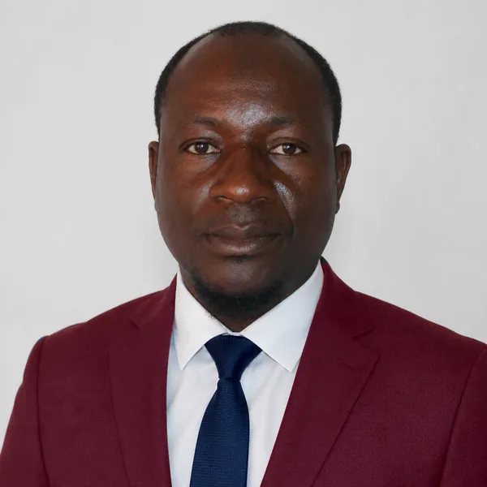
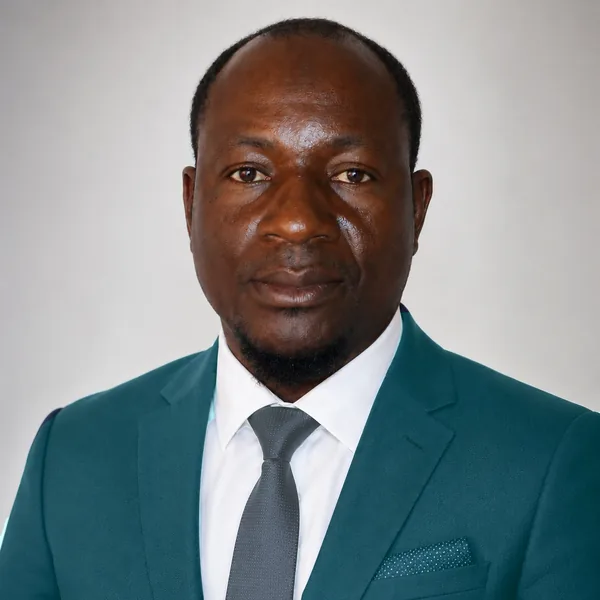

Trente ans de terrain, de la recherche agronomique à la coordination FAO
Un parcours continu vers des responsabilités croissantes, toujours au contact des communautés rurales.


Un expert de terrain, formé aux exigences de la coordination internationale
« Plus de 30 années à concevoir et coordonner des réponses concrètes à l'insécurité alimentaire, aux crises humanitaires et aux défis du changement climatique. »
Je suis expert en développement rural, fort de plus de 30 années d'expérience dans le secteur de la sécurité alimentaire et nutritionnelle, aussi bien à travers des interventions d'urgence humanitaire que des projets et programmes de promotion d'une agriculture et de systèmes alimentaires durables — sensibles à la nutrition et résilients aux effets du changement climatique.
J'ai développé une solide capacité à gérer des projets intégrés à activités diversifiées pour des ONG nationales et internationales, y compris des agences du système des Nations Unies réunies en consortium pour la conduite de projets conjoints. Je collabore étroitement avec les organisations paysannes, féminines et de jeunesse pour analyser leurs contraintes et besoins spécifiques, et y apporter des solutions adaptées en valorisant la participation, l'inclusion et la mobilisation des ressources internes des communautés cibles.
Mon expérience de collaboration avec les collectivités locales et les partenaires au développement s'appuie sur la conduite d'études monographiques et de diagnostics participatifs ayant alimenté plusieurs plans et programmes de développement régional et local.
30 ans d'expérience terrain, de la recherche agronomique à la coordination FAO
Un cheminement continu vers des responsabilités croissantes, toujours au contact direct des communautés rurales et des équipes projet.
Assistant Agronome
Sous-bureau FAO, Mopti
- Suivi et coordination de projets d'urgence, de résilience et de développement (sécurité alimentaire, nutrition, agriculture, élevage, pêche, foresterie, prévention et gestion des conflits liés aux ressources naturelles).
- Appui technique aux partenaires de mise en œuvre de la FAO (ONG et services techniques) et participation à la gestion du sous-bureau de Mopti et au rapportage des activités.
- Point focal national : formation des équipes partenaires, collectivités, radios et leaders communautaires à l'approche des Clubs d'écoute Dimitra ; représentation du Mali lors de rencontres internationales des spécialistes Dimitra.
Responsable du volet Agriculture
Plan d'Action de Développement Intégré (PADI), Sadiola
- Planification, mise en œuvre et suivi du volet Agriculture : aménagements hydro-agricoles, maraîchage, riziculture de bas-fond, production de semences vivrières, arboriculture et agroforesterie.
- Gestion des coopératives de producteurs de semences et du déploiement du matériel agricole du programme (tracteurs, batteuses).
- Rapportage des activités et appui à la gestion administrative du bureau du PADI.
Agent de Développement Communautaire
GRDR, Kayes
- Mise en œuvre d'activités d'aménagement hydro-agricole, maraîchage, riziculture de bas-fond, cultures sèches, agroforesterie, protection de l'environnement, aviculture et élevage de petits ruminants.
- Appui aux organisations de base et aux instances de concertation communales ; contribution aux monographies et aux plans de développement des communes.
- Suivi rapproché des activités de terrain, rapportage mensuel et accompagnement technique des collectivités communales.
Animateur de Développement Rural
Croix-Rouge Malienne, Kayes
- Appui aux activités génératrices de revenus pour des organisations féminines : production, conservation et transformation de légumes.
- Promotion de PMI/PME, crédit solidaire et alphabétisation fonctionnelle ; mise en relation avec les institutions de microfinance.
- Gestion de partenariats et rapportage périodique.
Animateur de Développement Rural
AMADE, Kayes
- Mise en œuvre d'activités de maraîchage, boutiques et moulins communautaires, crédit solidaire et hydraulique villageoise.
- Appui à l'hygiène et l'assainissement, aux soins de santé primaires et à la gestion des CSCOM/ASACO.
- Service juridique en milieu rural, appui aux PMI/PME et à l'alphabétisation fonctionnelle.
Technicien de Recherche agronomique
ICRISAT / CIRAD, Samanko-Bamako
- Conduite d'essais agronomiques et gestion des parcelles expérimentales.
- Appui aux publications scientifiques du centre de recherche.
Volontaire
Cellule d'Aménagement du Territoire / Gestion des Ressources Naturelles (CAT/GRN), Sikasso
- Facilitation de la communication entre l'équipe projet et les bénéficiaires.
- Appui à la mise en œuvre d'infrastructures agropastorales (micro-barrages, parcs de vaccination, marchés à bétail) selon une approche intégrée et participative.
Une formation continue, en phase avec les standards de la coopération internationale
Six diplômes obtenus en cours de carrière, du diplôme de technicien supérieur d'Agriculture aux masters en coopération internationale et gestion de projets.
Master 2 — Coopération Internationale et Aide Humanitaire (MCIAH)
KALU Institute, Madrid, Espagne
Master 2 — Planification Territoriale, Environnementale et Développement Durable (PTED)
Université DELTA C, Bamako, Mali
Master 2 — Management et Gestion des Projets & Programmes
Institut Sciences Campus, Ouagadougou, Burkina Faso
Master 1 — Facilitation et Conseils pour les Processus de Développement (FCPD)
Université DELTA C, Bamako, Mali
Licence Professionnelle — Gestion Technique de l'Environnement (LGTE)
Université Mandé Boukary, Bamako, Mali
Diplôme de Technicien Supérieur en Agriculture (DTSA)
IPR/IFRA, Katibougou, Mali
- Claude pour l'analyse des données, puis Intelligence artificielle appliquée au monde professionnel avec Claude (Mastery Class 2) — écosystème Claude (Claude AI, Claude Code, Claude Cowork, Claude in Chrome, Claude Design), Excel, SQL, Python, R, Power BI, tableaux de bord et automatisation — Eurêka Services, Kinshasa (2026)
- Analyse de données (Excel, SPSS, STATA) — CEFRDS-SARL, Bamako (2026)
- Le suivi-évaluation des projets et programmes — CEFRDS-SARL, Bamako (2026)
- Cadre Harmonisé (manuel 2.0) — analyse et classification de la sécurité alimentaire — PRESA / Cluster Sécurité Alimentaire, Direction Régionale de l'Agriculture, Mopti (2021)
- Diplôme d'expert en Transferts Monétaires en situation d'urgence (144 h, e-learning) — KALU Institute, Espagne (2023)
- Suivi & Évaluation des projets humanitaires — IDH International-Mali, Bamako (2023)
- Atelier sur l'engagement communautaire des Clubs Dimitra dans la localisation de l'aide — FAO, Niamey (2023)
- Gestion axée sur les résultats et Suivi & Évaluation des projets et programmes — PAM, Mopti (2015)
- Animation des champs écoles agropastoraux — FAO / Direction nationale de l'Agriculture, session de San (2017)
- Approche des Clubs d'écoute communautaire Dimitra — FAO Mali (2016)
- Gestion de l'eau et des ouvrages (aménagements hydro-agricoles) en irrigation de proximité — Direction Régionale du Génie Rural, Kayes (2014)
- Techniques culturales du riz de bas-fond — PADI, Sadiola (2012)
- Élaboration et gestion des projets — GRDR, Sélibabi, Mauritanie (2008)
- Système d'Information Géographique / Cartographie — IAVS, Burkina Faso (2016)
- Gestion de l'Information (Excel & KoBo Collect) — OCHA, Mopti (2016)
- Développement durable, un levier de croissance — France Université Numérique (2016)
- Gouvernance territoriale — France Université Numérique (2016)
- Du manager au leader agile — France Université Numérique (2016)
- Gestion de crise — France Université Numérique (2016)
- Comptabilité de gestion et pratique du tableur — France Université Numérique (2016)
- Élaboration des plans d'action et stratégies de lobby pour la sécurité alimentaire ; décentralisation et cadre stratégique de lutte contre la pauvreté — AMADE (2005)
- Atelier « Planification – Suivi – Évaluation (PSE) », Sélingué — AMADE, animé par le Cabinet IC/Consult, Pays-Bas (2004)
- Prévention des IST/VIH-SIDA — Hôpital Régional de Kayes (2003)
- Processus électoral — AMADE (2002)
- Para-juridisme rural — AMADE (1998)
- Hygiène et assainissement — Direction Régionale de la Santé, Kayes (1998)
- Transcription en langue nationale bambara — Académie d'enseignement de Kayes (1997)
- Stage de fin de cycle (9 mois) — ICRISAT/CIRAD, Samanko : identification et caractérisation du comportement photopériodique de 13 cultivars de sorgho (1995)
- Stage (45 jours) — CMDT, Kadiana : dressage des bœufs de trait et alphabétisation fonctionnelle (1992)
Liste non exhaustive — sélection des formations les plus représentatives du parcours.
Une mission à confier ?
Un projet à concevoir, une évaluation, une cartographie, un dispositif de suivi à mettre en place ? Parlons-en.